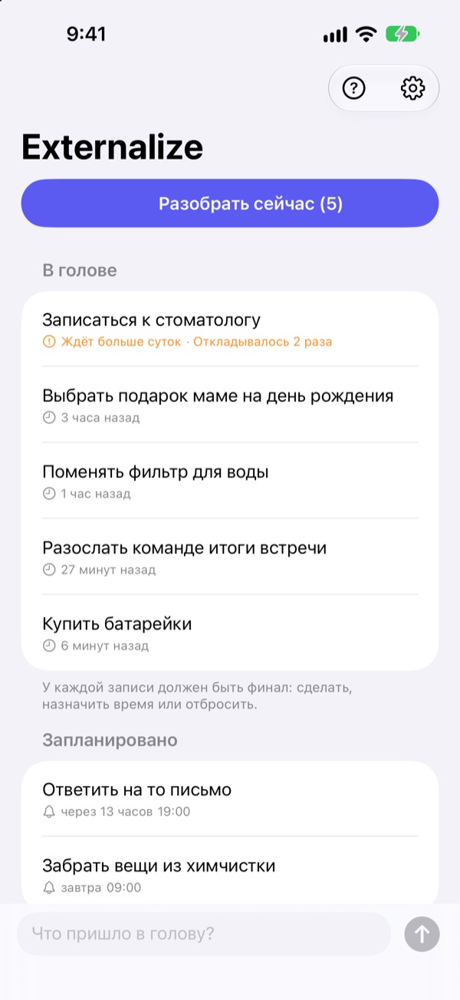
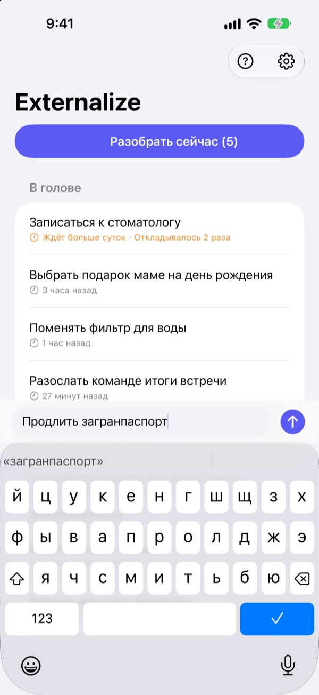
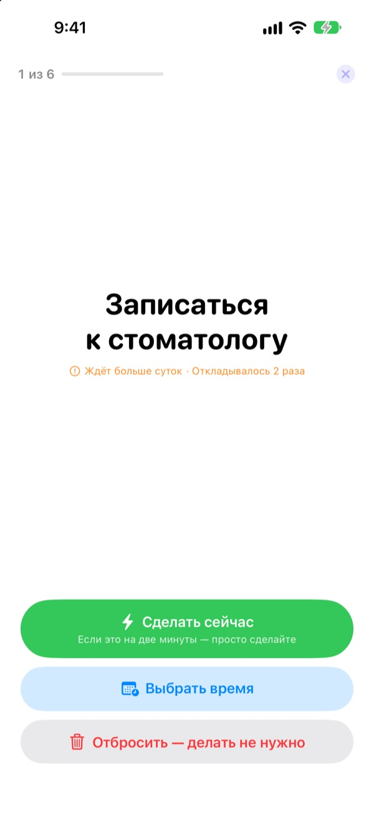
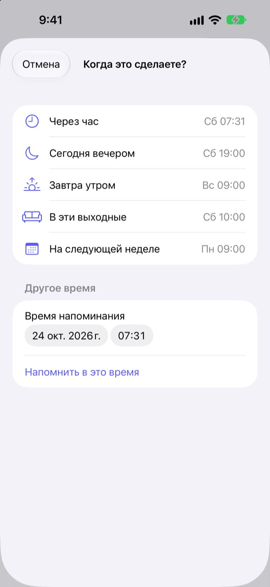

Запишите сейчас.
Разберите вечером.
«Ой, мне же надо…» Выпишите это из головы парой слов и забудьте. Вечером разберите то, что осталось, по одному.
Все функции бесплатны. Без аккаунта и входа.

Попробуйте здесь
Напишите, что крутится в голове, или нажмите на пример. Потом нажмите «Разобрать сейчас» и решите судьбу каждого дела.
Даже мелочи занимают место в голове
В душе, на светофоре, перед самым сном: «Мне же надо это сделать». Записать некуда, и вы держите это в голове, а то, чем вы заняты, страдает. Приложения для задач сначала требуют список и срок, и даже записать становится отдельной задачей.
Три секунды, и можно забыть
Откройте приложение и пишите в строке внизу экрана. Никаких списков, папок и сроков.
Нажмите на виджет на экране блокировки, и приложение откроется с пустой строкой. Скажите Siri Запомни в Externalize или назначьте это на кнопку действия, и запись сохранится, даже не открывая приложение.

Вечером разберите по одному
Если что-то осталось, в 21:00 придёт одно напоминание. Если всё сделано, оно не придёт.
При разборе дела появляются по одному, крупно. Выберите «Сделать сейчас», «Выбрать время» или «Отбросить», и откроется следующее. Если на дело нужно две минуты, включите таймер и сделайте его сразу.

Ничего не залёживается
Выберите «Через час», «Сегодня вечером», «Завтра утром», «В эти выходные» или «На следующей неделе», и дело вернётся в нужный момент. Прямо в уведомлении можно нажать «Готово», «Завтра утром» или «Отбросить».
То, что ждёт больше суток, и то, что вы снова и снова откладываете, помечается, и видно, что постоянно ускользает.

Три шага, чтобы начать
- 1
Запишите
Пара слов в приложении, на виджете экрана блокировки или через Siri, как удобнее.
- 2
Разрешите уведомления
Приложение спросит один раз, когда вы впервые что-то запишете. Через них приходят вечернее напоминание и выбранное время.
- 3
Разберите вечером
Нажмите на напоминание или «Разобрать сейчас» и решите судьбу каждого дела.
Прямо из списка
- Нажать на дело
- выбрать «Готово», «Выбрать время» или «Отбросить»
- Смахнуть вправо
- Готово (дело исчезает из списка)
- Смахнуть влево
- Отбросить или «Отложить», чтобы выбрать время
- Разобрать сейчас
- пройтись по оставшемуся по одному
- Запомни в Externalize
- сказать Siri, не открывая приложение
- Настройки ▸ Вечернее напоминание
- изменить время или выключить
При выборе времени «Сегодня вечером» означает 19:00, «Завтра утром» 9:00, «В эти выходные» субботу в 10:00, а «На следующей неделе» понедельник в 9:00. Можно выбрать и любые дату и время.
Частые вопросы
Можно записать, не открывая приложение?
Да. Скажите Siri Запомни в Externalize: она спросит, что записать, и сохранит. Назначьте быструю команду «Записать» на кнопку действия в Настройках, и хватит одного нажатия.
Как добавить виджет на экран блокировки?
Нажмите и удерживайте экран блокировки, коснитесь «Настроить» и выберите экран блокировки, нажмите на область виджетов и добавьте Externalize. Нажатие открывает пустую строку, а виджет показывает, сколько дел осталось. Для экрана «Домой» есть маленький виджет.
Как изменить или выключить вечернее напоминание?
Нажмите шестерёнку справа вверху ▸ Вечернее напоминание, чтобы изменить время или выключить его. По умолчанию это 21:00, а в дни, когда ничего не осталось, оно не приходит.
Не приходят уведомления.
Если в настройках Externalize написано, что уведомления выключены, нажмите там кнопку и включите их в Настройках iPhone. В дни, когда ничего не осталось, вечернего напоминания и не должно быть.
Как возвращается дело с назначенным временем?
В выбранное время придёт уведомление. Удерживайте его, чтобы сразу выбрать «Готово», «Завтра утром» или «Отбросить». Если ничего не выбрать, дело вернётся в «В голове», и вы решите его при следующем разборе.
Можно вернуть дело, отмеченное как готовое или отброшенное?
Нет. Разобранные дела исчезают из списка, архива нет. Если сомневаетесь, лучше выберите время, чем отбрасывать.
Перенесутся ли записи на новый iPhone?
Нет. Всё хранится только на этом устройстве и никогда не отправляется в iCloud или на сервер. Удалите приложение, и записи удалятся вместе с ним.
На каких устройствах работает?
На iPhone с iOS 17 или новее.
Вопрос или ошибка? Пишите на mizzking75@gmail.com. Укажите модель iPhone и версию iOS, так мы разберёмся быстрее.